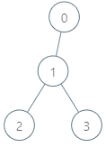
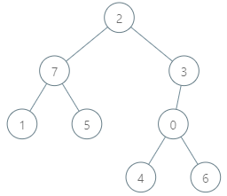

| Category | Difficulty | Likes | Dislikes |
|---|---|---|---|
| Algorithms | Hard | 409 | 24 |
array | hash-table | bit-manipulation | depth-first-search | trie
medianet
There is a rooted tree consisting of n nodes numbered 0 to n - 1. Each node's number denotes its unique genetic value (i.e. the genetic value of node x is x). The genetic difference between two genetic values is defined as the bitwise-XOR of their values. You are given the integer array parents, where parents[i] is the parent for node i. If node x is the root of the tree, then parents[x] == -1.
You are also given the array queries where queries[i] = [nodei, vali]. For each query i, find the maximum genetic difference between vali and pi, where pi is the genetic value of any node that is on the path between nodei and the root (including nodei and the root). More formally, you want to maximize vali XOR pi.
Return an array ans where ans[i] is the answer to the ith query.
Example 1:

Input: parents = [-1,0,1,1], queries = [[0,2],[3,2],[2,5]]
Output: [2,3,7]
Explanation: The queries are processed as follows:
- [0,2]: The node with the maximum genetic difference is 0, with a difference of 2 XOR 0 = 2.
- [3,2]: The node with the maximum genetic difference is 1, with a difference of 2 XOR 1 = 3.
- [2,5]: The node with the maximum genetic difference is 2, with a difference of 5 XOR 2 = 7.Example 2:

Input: parents = [3,7,-1,2,0,7,0,2], queries = [[4,6],[1,15],[0,5]]
Output: [6,14,7]
Explanation: The queries are processed as follows:
- [4,6]: The node with the maximum genetic difference is 0, with a difference of 6 XOR 0 = 6.
- [1,15]: The node with the maximum genetic difference is 1, with a difference of 15 XOR 1 = 14.
- [0,5]: The node with the maximum genetic difference is 2, with a difference of 5 XOR 2 = 7.
Constraints:
2 <= parents.length <= 1050 <= parents[i] <= parents.length - 1 for every node i that is not the root.parents[root] == -11 <= queries.length <= 3 * 1040 <= nodei <= parents.length - 10 <= vali <= 2 * 105